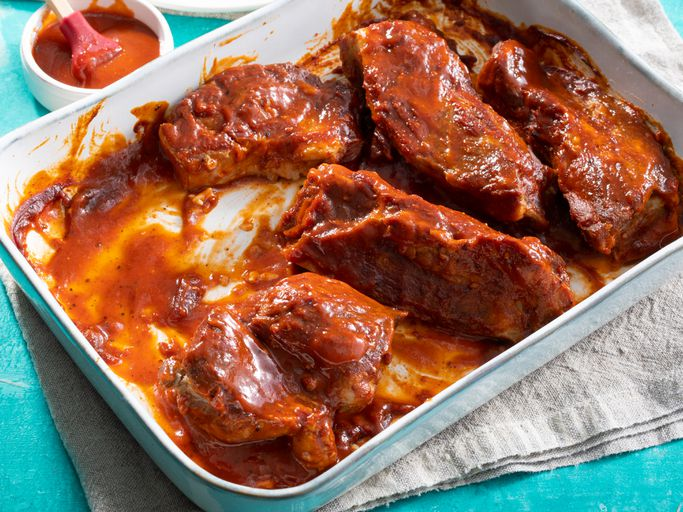

Simple Barbecue Ribs

Ingredients
- 2 ½ pounds country-style pork ribs
- 2 tablespoons kosher salt
- 1 tablespoon garlic powder
- 1 teaspoon ground black pepper>
- 1 cup barbeque sauce
Instructions
- Gather all ingredients.
- Place ribs in a large pot and cover with water. Stir in kosher salt, garlic powder, and pepper, and bring water to a boil over medium heat. Continue to boil until ribs are tender, 40 to 45 minutes.
- While the ribs are boiling, preheat the oven to 325 degrees F (165 degrees C).
- Remove ribs from the pot, and place them in a 9x13-inch baking dish. Pour barbeque sauce over ribs. Cover the baking dish with aluminum foil.